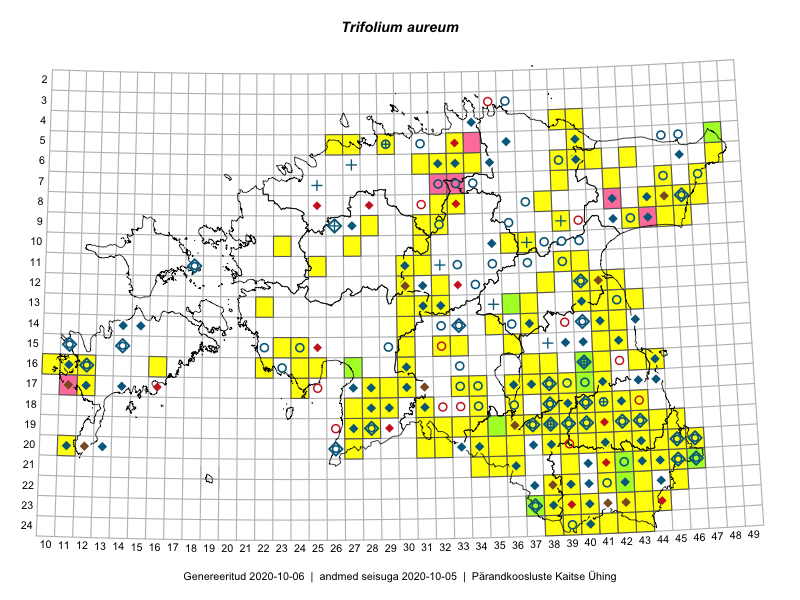

Trifolium aureum
Uuendatud: 2016-12-01
Kaardile koondatud taksonid: Trifolium aureum Pollich

Kaart põhineb 170 kirjel.
Kuvatud viited 20 esimesele andmebaasikirjele, ülejäänud PlutoFis
- Malle Leht: 2015-07-09: : ala
- Thea Kull: 2015-07-07: 16-40: ala
- Toomas Kukk, Peedu Saar: 2014-09-24: 06-41: ala
- Ott Luuk, Toivo Sepp: 2015-07-29: 09-31: ala
- Ott Luuk, Peedu Saar: 2015-08-13: 24-43: ala
- Peedu Saar, Eerik Leibak: 2015-07-30: 15-42: ala
- Peedu Saar, Eerik Leibak: 2015-07-30: 16-41: ala
- Ott Luuk, Peedu Saar: 2015-08-12: 23-43: ala
- Peedu Saar, Liina Oja: 2015-07-20: 08-44: ala
- Malle Leht: 2015-07-25: 18-40: ala
- Toomas Kukk, Eerik Leibak: 2015-07-29: 16-44: ala
- Malle Leht: 2015-07-27: 18-40: ala
- Malle Leht: 2015-07-08: : ala
- Malle Leht: 2015-07-18: 19-40: ala
- Peedu Saar, Liina Oja: 2015-07-24: 09-45: ala
- Peedu Saar: 2015-08-10: 13-40: ala
- Peedu Saar: 2015-08-11: 13-41: ala
- Peedu Saar, Ott Luuk: 2015-08-12: 23-42: ala
- Peedu Saar, Ott Luuk: 2015-08-13: 24-42: ala
- Peedu Saar, Eerik Leibak: 2015-08-16: 12-40: ala